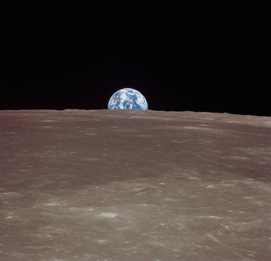
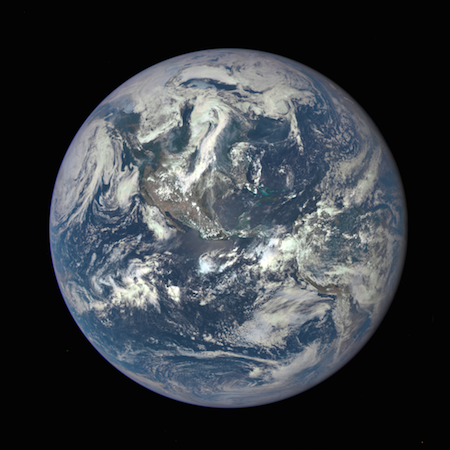

Earth
Structure and Surface
- Earth is a terrestrial planet. It is small and rocky.
- Earth's atmosphere is the right thickness to keep the planet warm so living things like us can be there. It’s the only planet in our solar system we know of that supports life. It is mostly nitrogen, and it has plenty of oxygen for us to breathe.
Time on Earth
- A day on Earth lasts a little under 24 hours.
- One year on Earth lasts 365.25 days. That 0.25 extra means every four years we need to add one day to our calendar. We call it a leap day (in a leap year).
Earth’s Neighbors
- Earth has just one Moon. It is the only planet to have just one moon.
- Earth has lots of spacecraft watching it. There is still a lot we can learn about our home planet.
- Earth is the third planet from the Sun in our solar system. That means Venus and Mars are Earth’s neighboring planets.
Quick History
- We have known about our planet since ancient times, of course. But we didn’t know our place in the solar system for a long time.
What does Earth look like?
This Apollo 11 picture taken by an astronaut in 1969 shows the Earth rising over the Moon. Doesn't it look small?

This is a view of Earth looking just at the northern portion.
A NASA camera on the Deep Space Climate Observatory satellite took this picture of the entire sunlit side of Earth from one million miles away.